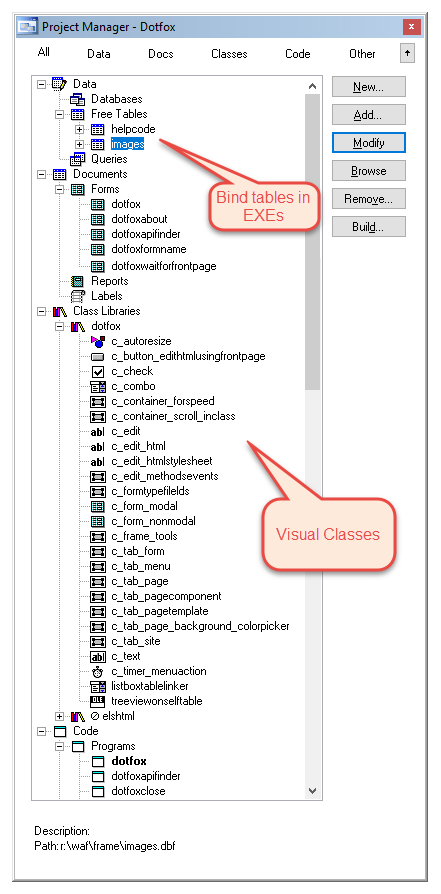
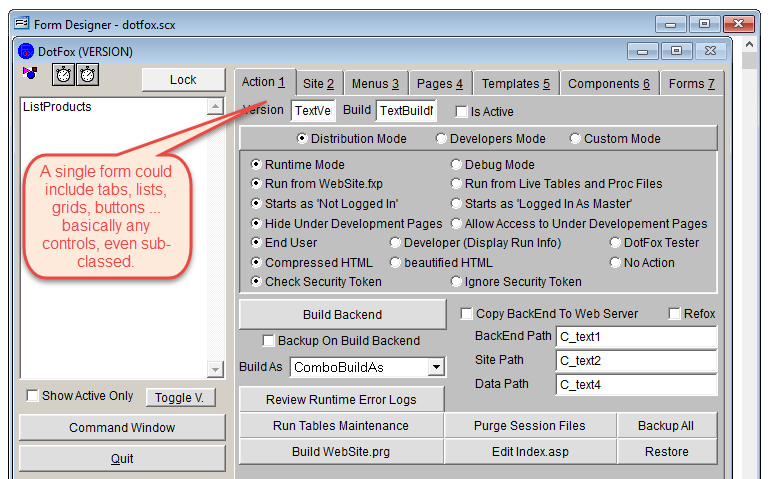
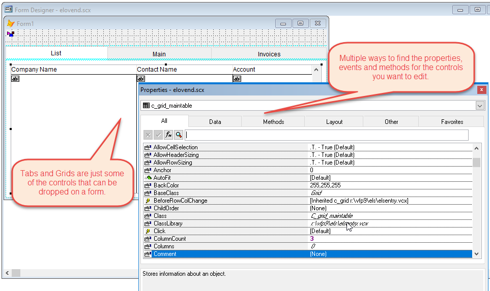
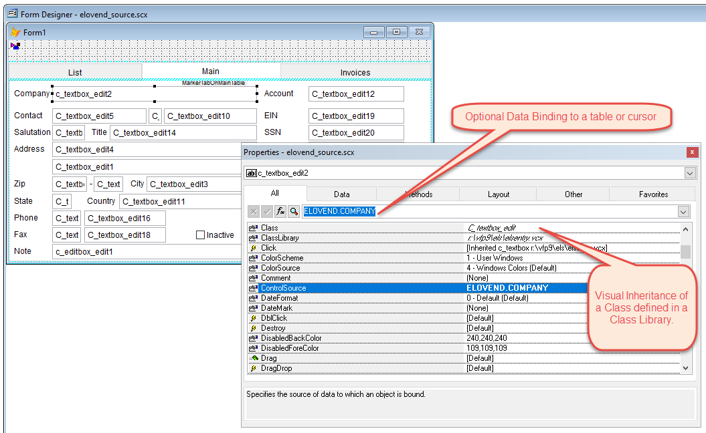
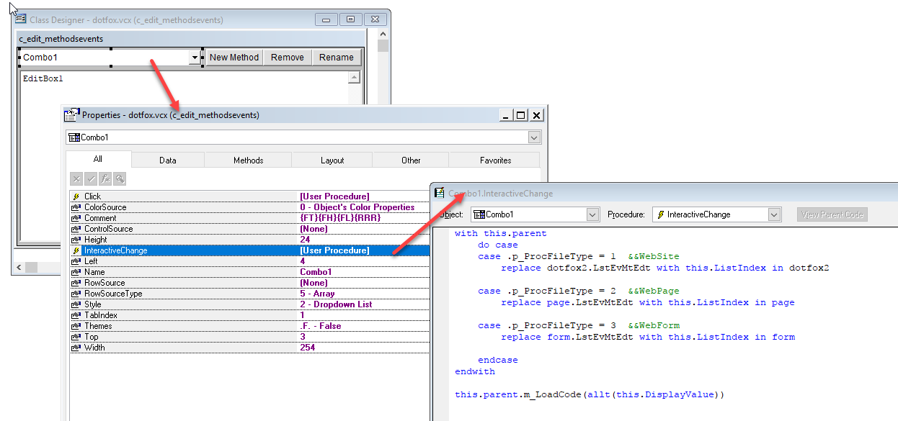
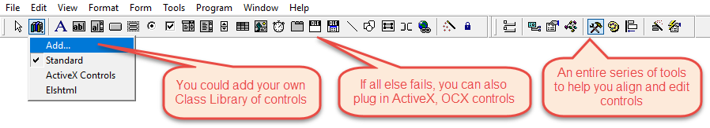
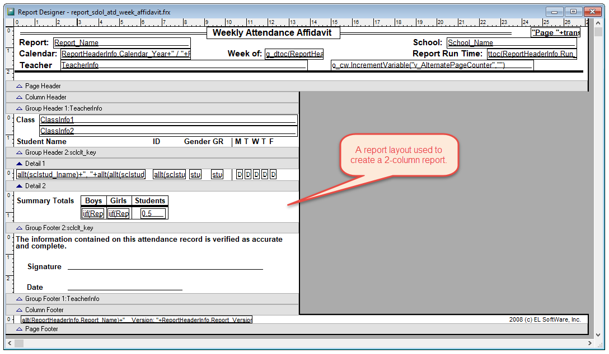
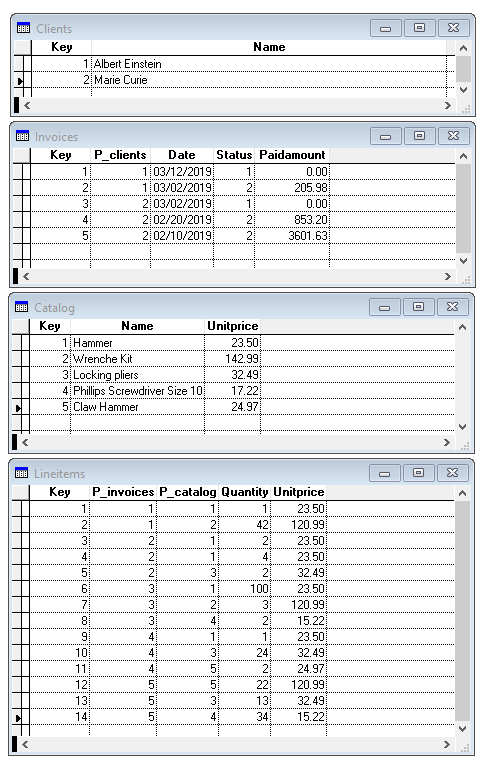
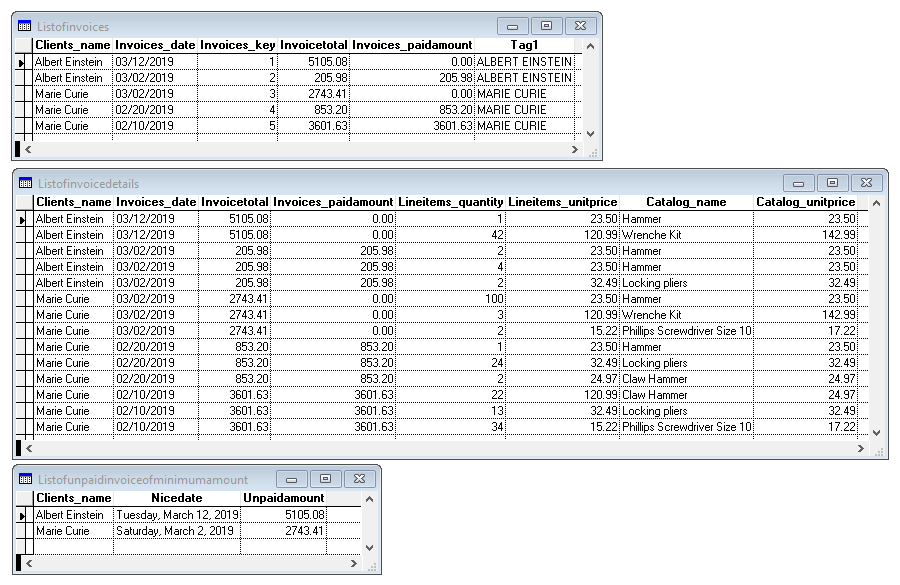

Comparing computer languages, Harbour, VFP and others
 Author: Eric Lendvai
Author: Eric Lendvai
Table of Contents
- Revision History
- Target Audience
- The big picture
- Desktop GUI and Development Environments
- Web Protocols
- In-Memory Tables and Local SQL Syntax
- VFP cursors and Local SQL engine
- Functions and commands
- Documentation and Training
- Core developers
- Conclusion
Revision History
| 03/12/2019 | New section "VFP cursors and Local SQL engine" |
Target Audience
- VFP developers contemplating a switch to Harbour.
- Harbour developers wondering what else is out there, and why VFP developers might join us.
- xHarbour, Xbase++ developers looking for Open Source and free solution.
The big picture
In
this article, I am going to highlight the main differences between
Harbour and VFP, and make a case for Harbour against all other popular
languages.
I personally developed in VFP (Microsoft Visual FoxPro) since FoxPro 1.0 until its last implementation, version 9. I am also well versed in Python, C, JavaScript and a few other languages. This current web site, harbour.wiki, was developed using VFP for backend, with some minor Python, and lots of JavaScript, Bootstrap and jQuery mainly. My hope is to convert the backend to Harbour at some point. But, sadly, quite a bit of work will be needed to add some missing features to Harbour, and some work to get rid of VFP specific code. Also, more than 55 tables are needed to store all the settings and data published here, all fully normalized.
So you may wonder: why convert to Harbour and not another language? Harbour is still very similar to VFP, more on that later.
Let’s first mention some of the most popular languages, some of their pros and cons, from the perspective of a VFP and Harbour developer.
I personally developed in VFP (Microsoft Visual FoxPro) since FoxPro 1.0 until its last implementation, version 9. I am also well versed in Python, C, JavaScript and a few other languages. This current web site, harbour.wiki, was developed using VFP for backend, with some minor Python, and lots of JavaScript, Bootstrap and jQuery mainly. My hope is to convert the backend to Harbour at some point. But, sadly, quite a bit of work will be needed to add some missing features to Harbour, and some work to get rid of VFP specific code. Also, more than 55 tables are needed to store all the settings and data published here, all fully normalized.
So you may wonder: why convert to Harbour and not another language? Harbour is still very similar to VFP, more on that later.
Let’s first mention some of the most popular languages, some of their pros and cons, from the perspective of a VFP and Harbour developer.
I
will also include xHarbour, Xbase++ (by Alaska-Software), X#, and of
course Harbour and VFP, in the following comparison matrix.
| Language | Pros | Cons |
|---|---|---|
Python |
|
|
| Java |
|
|
JavaScript (Node) |
|
|
C# and VB.NET |
|
|
PHP |
|
|
C++ |
|
|
| Ruby |
|
|
| xHabour |
|
|
XBase++ |
|
|
X# |
|
|
| VFP |
|
|
| Harbour |
|
|
Desktop GUI and Development Environments
As
mentioned in the language matrix above, Harbour does not support GUI
natively. GUI means Graphical User Interface. Clipper, rather than
Harbour, has a text-based entry screen system.
On
the other hand, VFP has a 100% GUI design and runtime engine. It
is true that VFP was a commercial product, but it came with everything
to design forms, visual classes, menus, reports, labels in a graphical
way. Even the forms and visual classes support inheritance! You could
create a control, and subclass it. Or even create a container that had
controls or subclassed controls in it. And all can be done with
form/class/report designers. You can manipulate all the controls via
property sheets, add code, events and methods to your form and classes.
You can even create your own property editing screens to integrate with
the form designer. The only major downside was that the designers would
store all the settings in tables, and it would take some tricks to deal
with source code version control systems. Also, sadly, VFP is Windows
32-bit only.
VFP has a complete integrated IDE
(Integrated Development Environment), but it missed the concept of
solutions, meaning a collections of projects and has no native
integration with git or any other source version control system.
A
project was used to build a single EXE, DLL, or APP (VFP-specific
executable). In Microsoft .NET for example, you can create a Solution,
which is kind of like a "product", that can have a collection of
projects, a series of EXEs and DLLs.
The following are some screens showing the VFP project, form, class and report designers/builders:







But,
sadly, Harbour does not natively have an IDE and/or GUI support. Like
Python, we have a collection of options to add GUI to our desktop apps.
Here is a list of free solutions to add GUI to your desktop app:
1. Harbour Mini Graphics
See www.hmgforum.com for more detail. Last version is HMG 3.4.4 dated. 2017/03/29
See www.hmgforum.com for more detail. Last version is HMG 3.4.4 dated. 2017/03/29
2. Harbour MiniGUI Extended Edition
See www.hmgextended.com for more detail. Derived from HMG, but is Windows platform-specific.
3. HwGUI
See www.kresin.ru/en/hwgui.html for more detail. Still actively supported and seems to have a large support group in Brazil.
Works on Windows and Linux. On Windows, uses the native Windows API, and for Linux uses www.gtk.org, a free GUI kit
Works on Windows and Linux. On Windows, uses the native Windows API, and for Linux uses www.gtk.org, a free GUI kit
4.
There was a project call "Harbour IDE" also called HBIDE, created by
Pritpal Bedi, but it does not seem to be actively maintained anymore.
And here are some commercial solutions to add GUI to your desktop app:
1. Five Tech Software
See https://www.fivetechsoft.com/english/index.php for more details.
See https://www.fivetechsoft.com/english/index.php for more details.
2.
Some Harbour developers are trying to use QT, which is a major player
in the GUI world. But I am not certain how it would be possible to avoid
having to pay for a very expensive monthly license fee ($350 / month).
And so ...
One of the other solutions, is to focus on using Harbour to create Web Apps! All the GUI is done rendering web pages.
If you are interested in demonstrating any of these solutions, or have
additional ones, please contact me, or even better, become a
harbour.wiki author!
Web Protocols
In this section, I will review how Harbour and VFP can be used in web solutions.
In
VFP, developers can create multi-threaded DLLs that can be called from
ASP pages running under IIS. Or purchase some other commercial solutions
that run their own web servers.
In Harbour, most developers create CGI executables.
Both
techniques work well enough, but are actually a little slow. Every page
request requires an entire new process to be started.
This web site runs using VFP and a former commercial product I created, called DotFox.
There
is also currently an open source HTTP native Harbour server available
in the contribs. But the problem is that every request, including
images, and JavaScript, CSS files have to be served by that Harbour
server, or some complicated IIS/Apache/nginx system have to be
configured to deal with work loads.
The optimum
solution would be to have a FastCGI EXE. That EXE would be started
automatically by a web server, and would stay running in a loop waiting
to respond to web page requests. As of the writing of this document, I
already have a prototype that would allow the generation of FastCGI
Harbour Apps, but it is currently only functional under Microsoft
Windows. I am hoping with the help of another Harbour developer, to
create a more generic contrib that could work on any platform. A future
article will be created on that subject, once available.
What
about other web protocols? In Harbour, there is a contrib, hbcurl. I am
not yet familiar with this, and hope to learn and share more about it,
unless someone would be interested to write an article about it? (This
is a plug to become a harbour.wiki author).
But there are some good commercial solutions as well to add more web protocol support. For example, https://www.chilkatsoft.com
has a royalty-free set of ActiveX controls that can be used to add FTP,
HTTP, HTTPS, Sockets, Web Sockets, Mail and more. I personally use it
under Windows with great success for VFP. Should also work for
Harbour, even in 64-bit mode. Just not certain yet how it would work
under Unix/Mac.
This ability to reach out to
the web via web protocols is also a wonderful way to bridge the
32/64-bit barrier, and also provide a good way to call Python or Node.js
code, for example. For this web site, I created a Python Rest API
internal server to allow me to call Python libraries to handle Web Push
Notifications, and provide support to Google Authenticator.
Harbour
can be one of the best languages to create future web apps! Compiling
down to C provides speed, easy packaging, and protection for your
intellectual property. Harbour is truly a 4GL language!
In-Memory Tables and Local SQL Syntax
Sadly, this is an area where Harbour is not as featured as VFP.
Let me first explain the concept of pseudo in-memory tables and local SQL syntax.
An
in-memory table, also called "cursor" in VFP is basically the
equivalent of a DBF table, but with the ability to have long field
names, that only exist while there is at least one work area using it.
In
VFP, cursors are mainly in memory, but if they are too large, will
overflow to disk. Any commands that can be executed against a regular
DBF table can also work on a cursor, including APPEND, REPLACE, DELETE,
creating indexes, LOCATE, SEEK, etc.
Cursor can be created in 3 different ways.
Method 1.
Calling the "CREATE CURSOR" command which is similar to "CREATE TABLE".
A list of fields with their attributes can be specified in the command,
or an array can be used as input. Even extended attributes, like
support to nulls, autoincrement, long field names can be added. Using
this method always create read/write tables.
Method 2.
Calling the ODBC SQLConnect functions to fetch data from any ODBC
backend, like PostgreSQL, MySQL, Advantage Database, even Microsoft SQL
Server. By default, the cursor will be read only, but it is possible to
make it also writable.
Method 3. Calling the VFP native SQL commands against DBF tables.
For example: SELECT fname,lname,dob,UPPER(lname+fname) AS tag1 FROM TABLE contacts ORDER BY tag1 INTO CURSOR ListOfContacts READWRITE
This
is one of the most powerful features in VFP. The resulting cursor
(in-memory table), ListOfContacts, can be used as any tables. You can
create indexes on it, or even use it again in additional SELECT
statements.
Imagine you use Method 2 getting
some data from a PostgreSQL backend, then again Method 2 from a MySQL
backend, than use Method 3, on the resulting cursors from the two
previous Method 2 to refine or combine data into another cursor. In just
a few line of code, you can compare data from multiple backends.
In
Harbour, you could do Method 2 against an Advantage database, but the
cursor is read-only, and you cannot reuse the table in more than one
area, or execute additional SQL statements against it. Also, this
requires a commercial, non-royalty-free license. In VFP, it is
royalty-free, and that is most likely the reason why Microsoft killed
VFP. The downfall of VFP was that it was too powerful and it was
royalty-free.
But if we can add these features to Harbour, it would be better than all the other open source languages!
So now let's look into the SQL commands of VFP.
You
could think of the SQL support of VFP as having SQLite backed in
to the VFP language. Virtually all the SQL options are supported by VFP,
like all type of JOINs, UNIONs, WHERE, HAVING, ORDER BY and more.
Here is the definition of the SELECT command as defined in the VFP help file, available from https://github.com/VFPX/HelpFile:
SELECT [ALL | DISTINCT] [TOP nExpr [PERCENT]] Select_List_Item [, ...]
FROM [FORCE] Table_List_Item [, ...]
[[JoinType] JOIN DatabaseName!]Table [[AS] Local_Alias]
[ON JoinCondition [AND | OR [JoinCondition | FilterCondition] ...]
[WITH (BUFFERING = lExpr)]
[WHERE JoinCondition | FilterCondition [AND | OR JoinCondition | FilterCondition] ...]
[GROUP BY Column_List_Item [, ...]] [HAVING FilterCondition [AND | OR ...]]
[UNION [ALL] SELECTCommand]
[ORDER BY Order_Item [ASC | DESC] [, ...]]
[INTO StorageDestination | TO DisplayDestination]
[PREFERENCE PreferenceName] [NOCONSOLE] [PLAIN] [NOWAIT]
FROM [FORCE] Table_List_Item [, ...]
[[JoinType] JOIN DatabaseName!]Table [[AS] Local_Alias]
[ON JoinCondition [AND | OR [JoinCondition | FilterCondition] ...]
[WITH (BUFFERING = lExpr)]
[WHERE JoinCondition | FilterCondition [AND | OR JoinCondition | FilterCondition] ...]
[GROUP BY Column_List_Item [, ...]] [HAVING FilterCondition [AND | OR ...]]
[UNION [ALL] SELECTCommand]
[ORDER BY Order_Item [ASC | DESC] [, ...]]
[INTO StorageDestination | TO DisplayDestination]
[PREFERENCE PreferenceName] [NOCONSOLE] [PLAIN] [NOWAIT]
But
one of the most powerful options is the INTO clause. The result
can be sent into a 2-dimensional array, a local physical table (dbf), or
ideally in a cursor (in-memory table).
The array output has
the major disadvantage that we lose the concept of field names, and that
we cannot use any commands like "INDEX", "LOCATE", and SCAN (a while
loop on the records).
The table output has the major
disadvantage of restricting the fields names to 10 characters. This is
especially an issue if you join multiple tables, and want to call the
resulting field something like tablename_fieldname.
The best
and most practical output are cursors. If the result is small enough,
they can fit in-memory, if too big, will be cached to disk. The field
names can be long, and you can do all the usual post-processing commands
like indexing, searching, data replaces, and most importantly, you can
use as input for more local SQL commands.
Also,
any local functions you would create in your program, or any methods of
any objects in scope, can be used in any of the expressions used to
build fields in the JOIN, WHERE, ORDER BY, HAVING clauses.
This
is also one of the major advantages of having native SQL command
support in the language. This is like have access to STORED FUNCTIONS
(SQL Server concept), created in your own language, locally, and not on a
remote server. More and more developers are not using STORED PROCEDURES
and STORED FUNCTIONS in backend database, since they are hard to
maintain, platform-specific, and not supported by most ORMs (see note
below).
Realistically, for us to implement this
in Harbour, we will probably have to rely on SQLite and the very
powerful RDD (Replaceable Database Driver) engine that Harbour already
has. But we may have difficulties in supporting local functions in
FIELD, WHERE, JOIN, HAVING clauses.
As a side
note, it would be nice to add the SCAN/ENDSCAN syntax that VFP has to
Harbour, natively to the language, and not simply via some precompiler
#COMMAND tricks. The SCAN/ENDSCAN loop ensures that whenever the loop is
processed again, that the current work area is on the one that started
the SCAN commands. So whenever the LOOP command is called, the work area
is also reset to the scope of the SCAN/ENDSCAN command.
What
about the RDD that Harbour has? If you are a VFP developer, this is
completely new. RDD stands for "Replaceable Database Driver". This is
incredibly powerful! You can switch the database engine you rely on. In
VFP, we are limited to DBF (FPT, CDX, NDX) tables, or old FoxBase files.
In Harbour, you can switch to SQLite, MySQL, Advantage Database
(commercial), PostgreSQL (not fully implemented, unless commercial), and
in theory you could create your own drivers.
Many
other languages decided not to use this approach, and virtualize data
access via ORMs (Object-Relational Mapping). With this method, the
result of SQL commands are always arrays or a collection of objects. The
problem here is that you cannot really use the result as source for
follow-up SELECT commands (FROM or JOINS). As a side note,
Alaska-Software, to my knowledge, implemented some support to SQL in
their Xbase++ commercial product, but they failed to finish sending
output to cursors.
Please contact me, the author, if you would like to add to this subject.
ERRATA December 2019:
Harbour
does support in-memory tables, but the entire content of the table must
be in-memory, no spanning to disk for really large result. But Harbour
can be compiled as a 64-bit app, so as long as we have enough ram, we
can hold a big result. Still having issues with nullable fields and no
"SQL on DBF" for now.
Also VFP Pseudo in-memory tables
can handle field names longer than 10 characters, which is a must if
fetching data from a SQL backend.
VFP cursors and Local SQL engine
This
section was added after the initial release of the article, following
comments and questions in the Harbour Users Google Forum.
It
was brought to my attention that it is possible to create in-memory
tables in Harbour as well. I still will need to do some more research in
that and will probably create a separate article about this to help VFP
developers.
But in this section I will focus
on showing mainly to Harbour developers, the power of integration
between the "cursors" (semi-in-memory tables) and the local SQL engine
of VFP.
Local SQL can be executed on DBFs or cursors (regardless how they were created).
In
the example below I will create 4 cursors and execute 3 SQL statements
to create 3 additional cursors. The easiest, is to see the results in
the following print screens, and review the VFP source code.
The source cursor (data) used in the SQL Commands:

The 3 cursors created by the local SQL commands:

close allclear all LOCAL l_MininumInvoiceAmount* Create cursors that will be used in local SQL commandsSELECT 0CREATE CURSOR Clients (key I AUTOINC, Name C(50)) SELECT 0CREATE CURSOR Invoices (key I AUTOINC,p_Clients I, Date D, Status N(1),PaidAmount N(14,2)) SELECT 0CREATE CURSOR LineItems (key I AUTOINC,p_Invoices I,p_Catalog I,Quantity N(4), UnitPrice N(10,2)) SELECT 0CREATE CURSOR Catalog (key I AUTOINC, Name C(100), UnitPrice N(10,2)) INSERT INTO Catalog (Name,UnitPrice) VALUES ("Hammer",23.50) && Key will be 1 INSERT INTO Catalog (Name,UnitPrice) VALUES ("Wrenche Kit",142.99) && Key will be 2INSERT INTO Catalog (Name,UnitPrice) VALUES ("Locking pliers",32.49) && Key will be 3INSERT INTO Catalog (Name,UnitPrice) VALUES ("Phillips Screwdriver Size 10",17.22) && Key will be 4INSERT INTO Catalog (Name,UnitPrice) VALUES ("Claw Hammer",24.97) && Key will be 5INSERT INTO Clients (Name) VALUES ("Albert Einstein") && Key will be 1INSERT INTO Clients (Name) VALUES ("Marie Curie") && Key will be 2INSERT INTO Invoices (p_Clients,Date,Status,PaidAmount) VALUES (1,DATE() ,1,0) && Key will be 1 INSERT INTO Invoices (p_Clients,Date,Status,PaidAmount) VALUES (1,DATE()-10,2,205.98) && Key will be 2INSERT INTO Invoices (p_Clients,Date,Status,PaidAmount) VALUES (2,DATE()-10,1,0) && Key will be 3INSERT INTO Invoices (p_Clients,Date,Status,PaidAmount) VALUES (2,DATE()-20,2, 853.20) && Key will be 4INSERT INTO Invoices (p_Clients,Date,Status,PaidAmount) VALUES (2,DATE()-30,2,3601.63) && Key will be 5INSERT INTO LineItems (p_Invoices,p_Catalog,Quantity,UnitPrice) VALUES (1,1,1,23.50)INSERT INTO LineItems (p_Invoices,p_Catalog,Quantity,UnitPrice) VALUES (1,2,42,120.99)INSERT INTO LineItems (p_Invoices,p_Catalog,Quantity,UnitPrice) VALUES (2,1,2,23.50)INSERT INTO LineItems (p_Invoices,p_Catalog,Quantity,UnitPrice) VALUES (2,1,4,23.50)INSERT INTO LineItems (p_Invoices,p_Catalog,Quantity,UnitPrice) VALUES (2,3,2,32.49)INSERT INTO LineItems (p_Invoices,p_Catalog,Quantity,UnitPrice) VALUES (3,1,100,23.50)INSERT INTO LineItems (p_Invoices,p_Catalog,Quantity,UnitPrice) VALUES (3,2,3,120.99)INSERT INTO LineItems (p_Invoices,p_Catalog,Quantity,UnitPrice) VALUES (3,4,2,15.22)INSERT INTO LineItems (p_Invoices,p_Catalog,Quantity,UnitPrice) VALUES (4,1,1,23.50)INSERT INTO LineItems (p_Invoices,p_Catalog,Quantity,UnitPrice) VALUES (4,3,24,32.49)INSERT INTO LineItems (p_Invoices,p_Catalog,Quantity,UnitPrice) VALUES (4,5,2,24.97)INSERT INTO LineItems (p_Invoices,p_Catalog,Quantity,UnitPrice) VALUES (5,5,22,120.99)INSERT INTO LineItems (p_Invoices,p_Catalog,Quantity,UnitPrice) VALUES (5,3,13,32.49)INSERT INTO LineItems (p_Invoices,p_Catalog,Quantity,UnitPrice) VALUES (5,4,34,15.22)SELECT Clients.Name AS Clients_Name,; Invoices.date AS Invoices_Date,; Invoices.key AS Invoices_key,; SUM(LineItems.Quantity*LineItems.UnitPrice) AS InvoiceTotal,; Invoices.PaidAmount AS Invoices_PaidAmount ,; UPPER(Clients.Name) AS tag1; FROM Invoices; INNER JOIN Clients ON Invoices.p_Clients = Clients.key; INNER JOIN LineItems ON LineItems.p_Invoices = Invoices.key; INNER JOIN Catalog ON LineItems.p_Catalog = Catalog.key; GROUP BY Invoices.key,Clients.Name,Invoices.date,Invoices.PaidAmount,tag1; ORDER BY tag1,Invoices.date descending; INTO CURSOR ListOfInvoices SELECT Clients.Name AS Clients_Name,; Invoices.date AS Invoices_Date,; ListOfInvoices.InvoiceTotal AS InvoiceTotal,; Invoices.PaidAmount AS Invoices_PaidAmount,; LineItems.Quantity AS LineItems_Quantity,; LineItems.UnitPrice AS LineItems_UnitPrice,; Catalog.Name AS Catalog_Name,; Catalog.UnitPrice AS Catalog_UnitPrice; FROM Invoices; INNER JOIN Clients ON Invoices.p_Clients = Clients.key; INNER JOIN LineItems ON LineItems.p_Invoices = Invoices.key; INNER JOIN Catalog ON LineItems.p_Catalog = Catalog.key; LEFT OUTER JOIN ListOfInvoices ON ListOfInvoices.Invoices_key = Invoices.Key; INTO CURSOR ListOfInvoiceDetailsl_MininumInvoiceAmount = 1000 SELECT ListOfInvoices.Clients_Name ,; NicelyFormattedDate(ListOfInvoices.Invoices_Date) AS NiceDate,; ListOfInvoices.InvoiceTotal - ListOfInvoices.Invoices_PaidAmount AS UnpaidAmount ; FROM ListOfInvoices; WHERE ListOfInvoices.InvoiceTotal <> ListOfInvoices.Invoices_PaidAmount; AND ListOfInvoices.InvoiceTotal > l_MininumInvoiceAmount; INTO CURSOR ListOfUnPaidInvoiceOfMinimumAmountRETURNFUNCTION NicelyFormattedDate lparameter par_Datereturn padr(cdow(par_Date)+", "+cmonth(par_Date)+" "+trans(day(par_Date))+", "+trans(year(par_Date)),30)
Functions and commands
VFP's
approach is to make all of its functions and commands are available in
any PRG. It has so many options that it is hard to describe. Thousands
of developers have contributed on wish lists to ensure the language is
as rich as possible. Please see https://github.com/VFPX/HelpFile for more info.
In
Harbour, you need to use the #include compiler statement to ensure a
function's definition is available. It can be tricky sometime to know
what to include in the header of your PRG. But this approach allows you
to create smaller EXEs, and to swap out how your program executes some
functions. Also, in Harbour, there are many options to "translate"
functions and commands syntax in your source code. This could be used to
map some VFP functions to the Harbour's equivalent.
Both
languages have great support for the Object-Oriented (OO) architecture.
VFP has OO for visual objects, but Harbour has deeper implementation in
PRGs, like multiple inheritance, also class based properties (meaning
not object-level properties) and the ability to allow
implementation of classes to be coded in multiple PRGs.
Harbour
has some very nice and powerful functions and options on its own. Like
Hash Arrays and Codeblocks. Entire articles can be written on those two.
But since VFP has cursors, you would not need Hash Arrays, and since
most UIs have hooks for events and methods, Codeblocks are not needed.
But searching through arrays using Codeblocks is an extremely powerful
feature. But again having cursors that can be indexed and searched with
the LOCATE commands means you can achieve the same results.
Both
languages are very similar and luckily share some key properties, like:
case-insensitive syntax, arrays' first element is number 1 (not
0-based), non-enforcement of indentation, PUBLIC, PRIVATE and LOCAL
variables (Harbour also has STATIC), work areas (for tables). But
since Harbour is a lot closer to C, some of the C features, like
compiler statements, in-line assignments, can be a challenge for VFP
developers.
Documentation and Training
VFP used to have so many user groups. I personally was on the board of the San Diego User group, see https://www.foxdevsd.org/index.asp?page=MeetingPast.
Some colleges even provided classes on VFP.
There is still a book publisher dedicated to VFP, https://www.hentzenwerke.com/catalog/zcatalog.htm
And if you Google VFP/Visual FoxPro, a lot of material can be found.
There is still a yearly commercial conference for VFP developers, see http://www.swfox.net in English.
For Harbour, a non-commercial conference is being organized by https://medium.com/harbour-magazine , but in Spanish.
On
the other hand, Harbour is a fragmented community. With xHarbour,
Xbase++, and the large set of UI frameworks, it is hard to find a
definitive set of documentation. The core repo has some docs, but it is
not structured in a way to make it easy for newcomers. This is where
hopefully harbour.wiki can help.
Please contact the harbour.wiki site administrator to add links to training materials.
Core developers
Core developers ... none for VFP since it is dead, and closed code by Microsoft.
There is still an open source initiative to extend VFP; see https://vfpx.github.io/
On
the Harbour side, there are a few incredibly talented developers, like
Viktor Szakats, Pritpal Bedi, Przemyslaw Czerpak, Antonio Linares, with
around 30 total core developers, see
https://github.com/harbour/core/graphs/contributors.
But
some developers created their own branch; this, of course, does not
help if the code is not merged back in the mail repos.
The best would be to have a Foundation to help steer the language, and coordinate the effort of the core developers.
Python, with its Python Software Foundation (https://www.python.org/psf/) and its Package Installer (https://pypi.org/) definitely, has one of the best approaches to ensure the language is popular and evolves to match the needs of its community.
Conclusion
This
article is just a starting point for conversation about differences and
similarities between Harbour and VFP, and to compare Harbour to other
languages.
Hopefully, a lot of articles will be
made available on this wiki to assist new developers in using and
contributing to the Harbour language.
Harbour could also become a wonderful language to also develop secure and fast web apps.
Easy access to databases is key for any successful business solution.
The browser did not close this tab. It may have been opened directly instead of from the Articles list. Use Back to Articles.